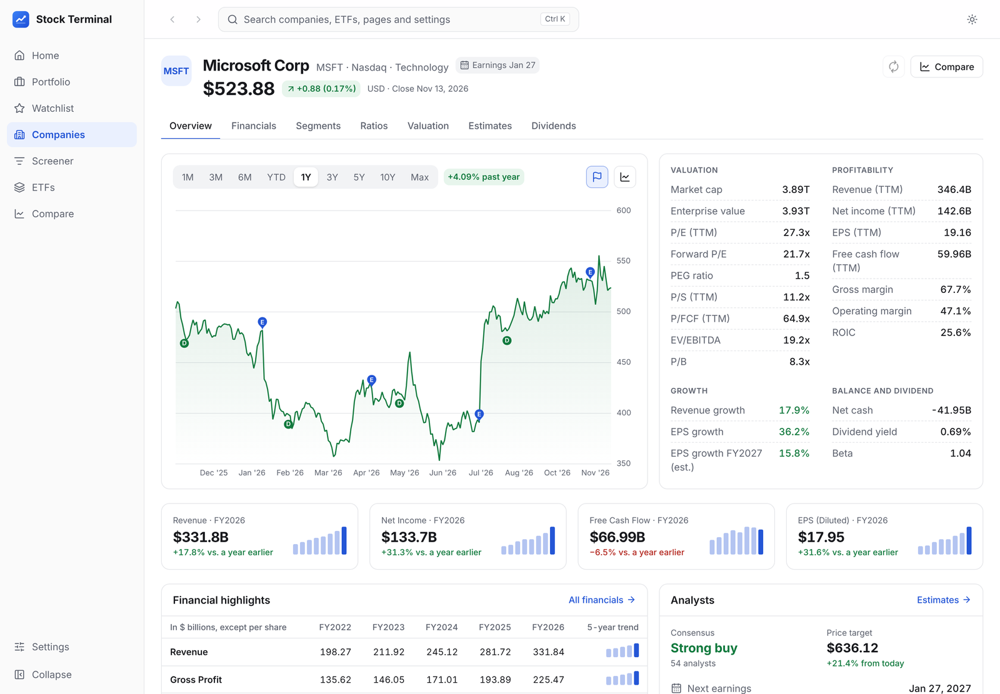
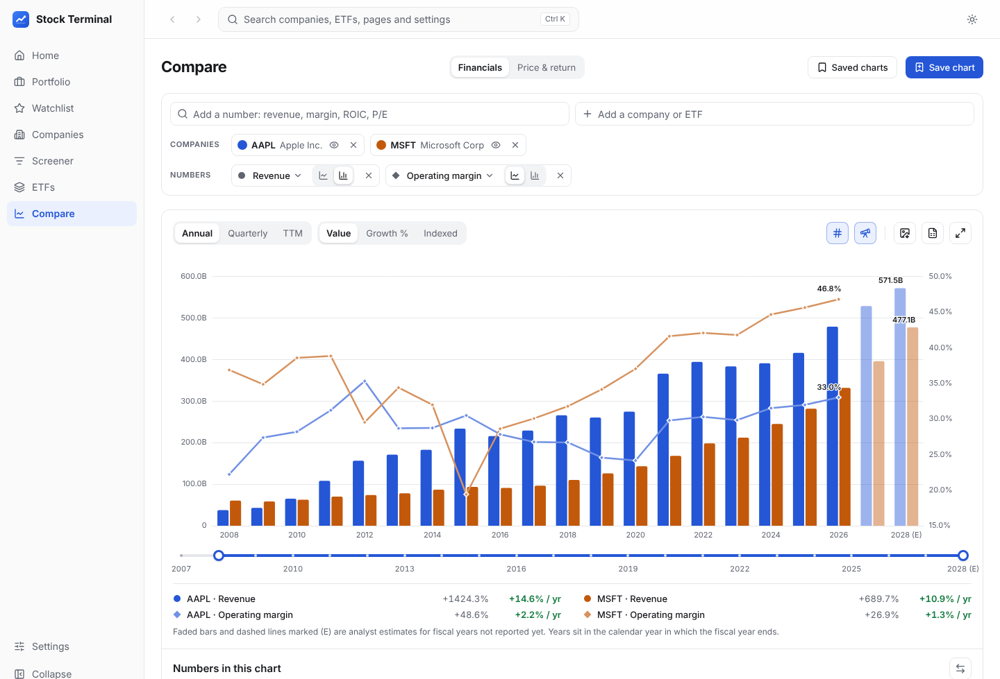

Stock Terminal
A free stock research app for your own computer. The financials of every US listed company back to 2009, a screener, side-by-side charts, watchlists and alerts. Built on free public data, with no account and no subscription.
Windows 10 or 11: run the installer, nothing else needed. Mac: unzip and drag Stock Terminal to Applications. The app updates itself after that.

Every US company
Income statement, balance sheet, cash flow, segments, ratios and valuation, annual, quarterly and TTM. All in US dollars.
Screener and Compare
Filter on about 75 numbers per company, and chart revenue growth, margins or price for several companies side by side.
Watchlists and alerts
Price limits, big moves, new results and dividend changes, in the app and on your phone.
Your data stays yours
Everything is stored on your own computer. The S&P 500 is ready in a few minutes with the starter pack.
Getting started
- Download and install (Windows may warn about an unknown publisher: click More info, then Run anyway).
- Enter an email address. The SEC, where the financial reports come from, asks every tool for a contact email. It stays on your computer.
- Click Get the S&P 500, or search any company and open it to load it.
Compare anything

Open source
The full code is on GitHub under the MIT licence. Ideas and fixes are welcome: see how to contribute.
Found a problem?
In the app: Settings, About, Report a problem. Or open an issue here.